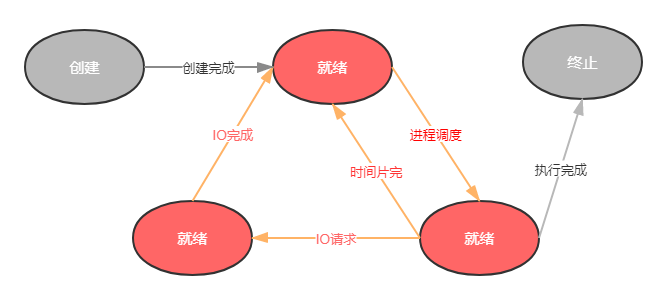

操作系统学习笔记
概述篇
管理计算机软硬件资源的计算机程序
管理配置内存 决定资源供需顺序 控制输入输出设备等
提供让用户和系统交互的操作界面 (不局限种类和设备)
简单而言就是 管理硬件,提供用户交互的软件系统
相关概念
并发性(前提) : 需要区分并行和并发的概念
共享性 : 操作系统中的资源可以供多个并发的程序共同使用,共享分为
互斥共享形式和同时访问形式虚拟性 : 表现为把一个物理实体转变为诺干个逻辑实体,而物理实体是真实存在但是逻辑实体是虚拟的. 虚拟技术主要有
时分复用技术和空分复用技术- 时分复用技术
资源在时间上复用,不同程序并发使用
多道程序分时使用计算机的硬件资源
提高资源的利用率
- 时分复用技术
异步性
进程实体
- 系统进行资源分配和调度的基本单位
- 作为程序独立运行的载体保障程序正常运行
- 线程是操作系统进行运行调度的最小单位，包含在进程中，是进程实际运行工作的单位。进程的线程共享进程资源
主存中进程形态
- 进程标识符
- 处理机状态
- 进程调度信息
- 进程控制信息
进程控制块 PCB
- 描述和控制进程运行的通用数据结构
- 记录当前状态和控制进程运行的全部信息
- 使得进程是能够独立运行的基本单位
- PCB 是操作系统进行调度经常会被读取的信息
- PCB是常驻内存的，存放在系统专门开辟的PCB区域内
五状态模型
创建
- 创建进程时拥有PCB但是其他资源尚未就绪的状态
- 操作系统提供fork函数接口创建进程
就绪
- 所有的资源都准备好，只差CPU资源的状态
- 在一个系统中多个处于就绪状态的进程通常排成一个队列
执行
- 进程获得CPU，其程序正在执行
- 单处理机中，在某一个时刻只能有一个进程是处于执行状态
阻塞
- 放弃CPU的状态 （其他设备未就绪而无法继续执行）
- 也存在 阻塞队列
终止
- 进程结束由系统清理或者归还CPU的状态
进程同步
- 对竞争资源在多进程间进行使用次序的协调
- 使得并发执行的多个进程之间可以有效地使用资源和相互合作
原则
- 空闲让进： 资源无占用，允许使用
- 忙着等待：资源有占用，请求进程等待
- 有限等待：保证有限的等待时间能够使用资源
- 让权等待：等待时候，进程需要让出CPU
同步方法
- 消息队列
- 共享存储
- 信号量
线程同步方法
进程间多线程也需要同步，当多进程并发使用进程资源
- 互斥量
- 读写锁
- 自旋锁
- 条件变量
进程管理
类型
- 前台进程
- 后台进程 将需要的执行的指令后面加
&启动 - 守护进程 进程名字以
d结尾的一般都是
关系
进程ID： 进程唯一标记，每个进程的不一样。是非负整数，最大值由操作系统限定
ID为0的进程为idle进程，是系统创建的第一个进程
ID为1的进程是init进程，是0号进程的子进程，完成系统初始化
Init进程是所有用户进程的祖先进程关系
父子进程间关系可以通过pstree命令查看
进程调度
计算机通过决策决定哪个就绪进程可以获得CPU使用权
- 保留旧进程运行信息，请出就进程
- 选择新进程，准备运行环境并分配CPU
调度机制
- 就绪队列的排队机制：将就绪进程按照一定的方式排成队列，以便调度程序可以最快的找到就绪进程
- 选择运行进程额委派机制：调度程序以一定的策略选择就绪进程，将CPU资源分配给它
- 新老进程的上下文切换机制：保存当前进程的上下文信息，装入被委派执行进程的运行上下文
调度方式
| 抢占式调度 | 非抢占式调度 | |
|---|---|---|
| 系统开销 | 切换频繁、开销大 | 切换次数少、开销少 |
| 公平性 | 相对公平 | 不公平 |
| 应用 | 通用系统 | 专用系统 |
非抢占式
处理器一旦分配给某个进程，会让该进程一直使用下去。调度程序不以任何理由抢占正在被使用的处理器，直到完成工作或者因为IO阻塞才会让出处理器
抢占式
允许调度程序以一定的策略让出当前运行的程序,保存好旧进程的上下文信息,分配处理器给新进程
调度算法
| 算法 | 描述 |
|---|---|
| 先来先服务 | 按照就绪队列排序 |
| 短进程优先 | 优先选择就绪队列中估计运行时间最短的进程 不利于长作业进程执行 |
| 高优先权优先 | 进程附带优先权，调度进程优先选择权重高的进程 使得紧迫的任务可以优先处理 |
| 时间片轮转 | 先来先服务的原则排队就绪进程 每次从队列头部去除待执行进程，分配一个时间片执行后，插入尾部 相对公平，但不能保证及时响应用户操作 |
死锁
两个或者两个以上的进程在执行过程中，由于竞争资源或者彼此通信造成的一种阻塞现象，无外力作用无法推进下去
原因
- 竞争资源
- 进程调度顺序不当
条件
- 互斥
- 请求保持
- 不可剥夺
- 环路等待
预防算法
- 银行家算法
存储管理
- 确保计算机由足够的内存使用
- 确保程序可以从可用内存中获取一部分内存使用
- 确保程序可以归还使用后的内存给其他程序使用
内存分配
- 缺失!!!!!!!!!!!!!!!
内存回收

段页式存储管理
操作系统管理进程的空间
页式存储管理
段式存储管理
段页式存储管理
- 本文链接：https://www.wl960127.top/posts/71959014/
- 版权声明：本站内容均为个人学习笔记,不涉及商业用途，仅提供学习参考,第三方摘录已署名链接,未署名请评论添加,转载署名来源即可。
分享